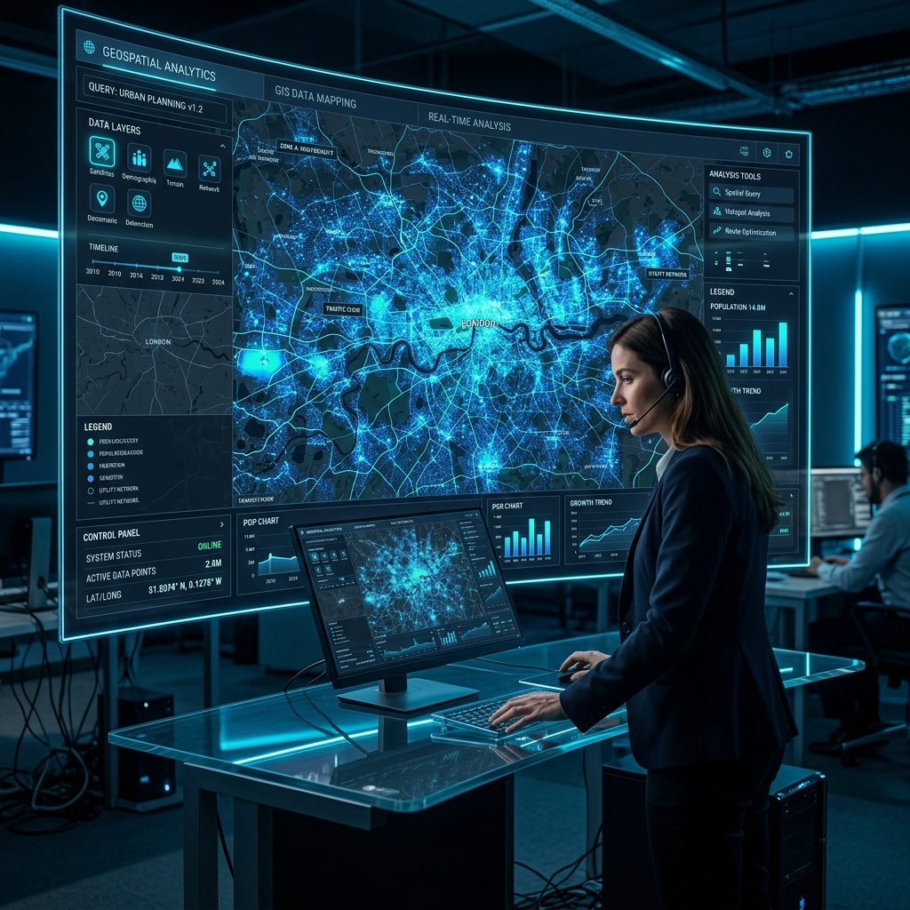
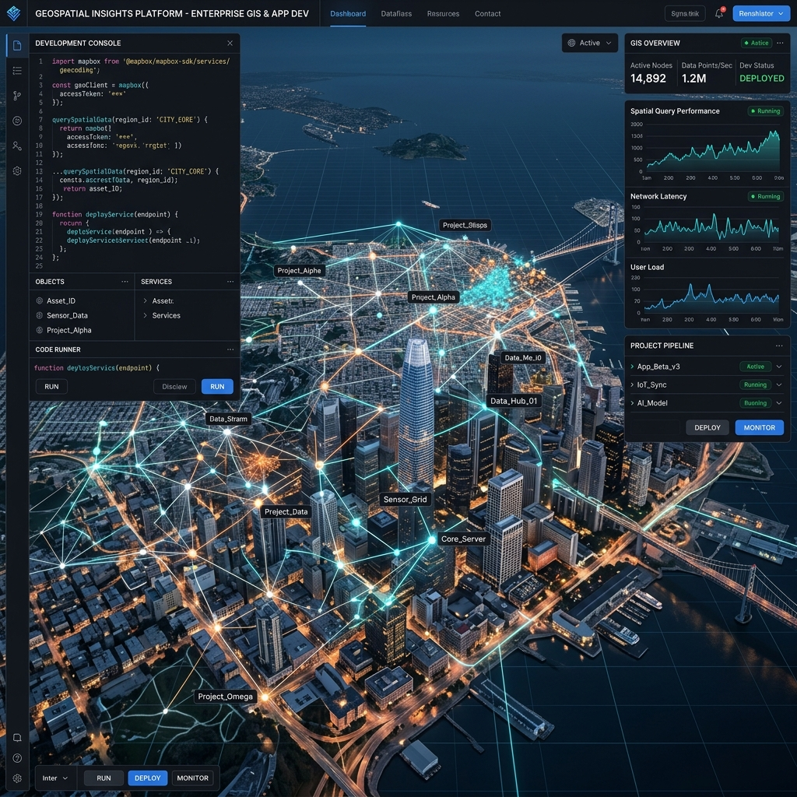
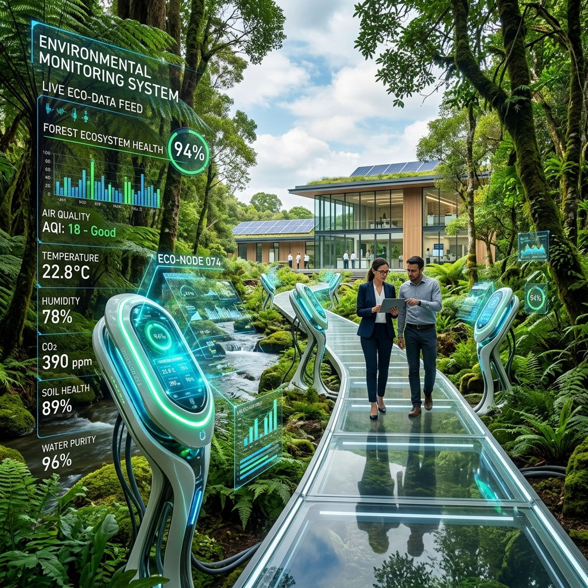

Geospatial Solutions That Drive Impact
At Spatial Heights Technologies, we offer a comprehensive suite of geospatial services designed to help organisations make informed, location-intelligent decisions. From satellite imagery analysis to field data collection and geospatial development, our solutions are tailored to the specific needs of each client.

GIS Mapping & Analysis
We design and deliver high-precision Geographic Information System solutions for organisations that need to visualise, manage, and analyse spatial data at scale. Our cartographic productions are detailed, accurate, and designed for practical use whether for internal operations, regulatory reporting, or strategic planning.
What We Deliver:
- Custom map production and cartographic design
- Spatial database design and management
- Geospatial data analysis and interpretation
- Land use and land cover mapping
- Site suitability and spatial decision support

Enterprise GIS & Application Development
We design and build enterprise-grade spatial data infrastructure from geodatabase architecture and web map services to custom field data collection applications and operational dashboards. Our solutions are built to be scalable, interoperable, and user-friendly, enabling organisations to collect, manage, and monitor spatial data in real time.
What We Deliver:
- Custom field data collection mobile applications
- Geodatabase design and enterprise GIS deployment
- Web-based interactive map portals
- Real-time asset monitoring dashboards
- Spatial data interoperability and API integration
Drone & LiDAR Surveys
Our certified drone operations team conducts high-resolution aerial surveys for clients requiring precise topographic data, volumetric measurements, and detailed aerial photography. Combined with LiDAR technology, we generate accurate point cloud datasets and digital terrain models suitable for engineering, construction, and environmental projects.
What We Deliver:
- UAV aerial photography and photogrammetry
- LiDAR point cloud data acquisition and processing
- Digital terrain and surface modelling (DTM/DSM)
- Volumetric analysis for mining and construction
- Infrastructure corridor surveys
Remote Sensing & Satellite Imagery Analysis
We harness the power of earth observation data to provide actionable intelligence on environmental conditions, land changes, and resource distribution. Using platforms such as Sentinel, Landsat, and commercial satellite providers, we process and interpret multi-spectral and hyperspectral imagery to deliver insights that ground-level surveys alone cannot provide.
What We Deliver:
- Multi-temporal satellite imagery analysis
- Predictive modelling
- Land use change detection
- Deforestation and environmental monitoring
- Flood and disaster risk mapping

Environmental Monitoring
We support government agencies, conservation organisations, and private sector clients in tracking and responding to environmental change. Using satellite time-series data and advanced spatial analysis techniques, we provide evidence-based insights for environmental compliance, conservation planning, and climate impact assessment.
What We Deliver:
- Vegetation health and trend analysis
- Deforestation and habitat loss monitoring
- Coastal erosion and flood zone mapping
- Environmental impact assessment support
- Climate change spatial analysis
Data Visualisation & Analytics
Raw spatial data is only as valuable as the decisions it enables. We transform complex datasets into clear, compelling visual narratives, interactive dashboards, 3D visualisations, and custom reports that communicate spatial intelligence to both technical and non-technical audiences.
What We Deliver:
- Interactive web-based geospatial dashboards
- 3D geographic visualisation and modelling
- Spatial statistics and predictive analytics
- Custom reporting and data storytelling
- Executive-level geospatial briefing materials

Capacity Building & GIS Training
We believe that sustainable impact requires knowledge transfer. We offer structured GIS and remote sensing training programmes for organisations seeking to build in-house geospatial capability from foundational GIS literacy to advanced spatial analysis and software proficiency.
What We Deliver:
- Corporate and institutional GIS training workshops
- Hands-on training in ArcGIS, QGIS, and Google Earth Engine
- Remote sensing and satellite data analysis courses
- Drone operations and data processing training
- Post-training technical support
Professional Services
We offer specialized professional services tailored to support organisations in planning, implementing, and optimizing their geospatial and data-driven initiatives. Our team combines technical expertise with industry experience to deliver strategic guidance, project execution, and capacity development that drive sustainable results.
What We Deliver:
- Geospatial consulting and advisory services
- Project planning, design, and implementation support
- Technical support and system optimization
- GIS deployment
- Policy and framework development for data governance
- Monitoring, evaluation, and reporting support
Data Collection & Management
We deliver comprehensive data collection and management solutions that ensure the accuracy, reliability, and accessibility of critical datasets. By leveraging modern digital tools and standardized methodologies, we support organisations in capturing high-quality field and spatial data, structuring it effectively, and maintaining well-governed data systems.
What We Deliver:
- Digital field data collection using mobile and GPS-enabled tools
- Data cleaning, validation, and quality assurance
- Database design and structured data management
- Secure data storage and backup solutions
- Data integration and migration services
- Real-time data access and reporting platforms